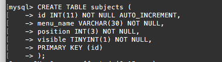
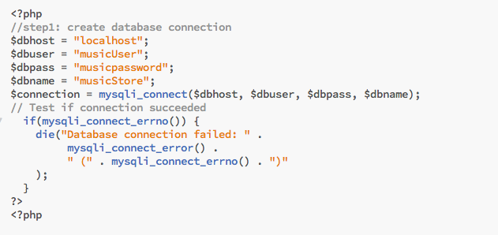
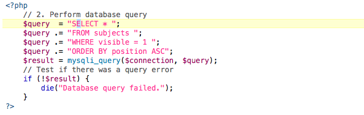
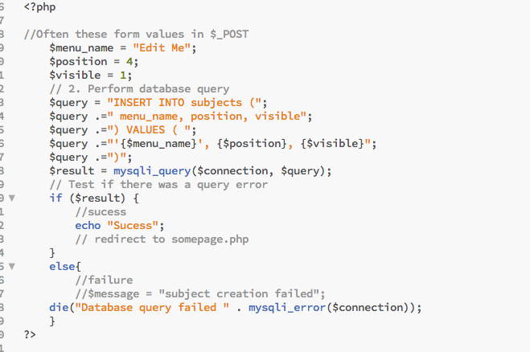
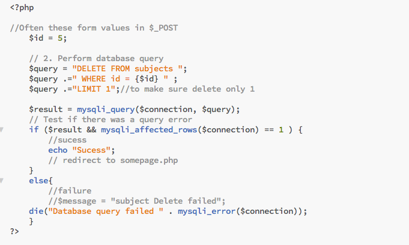

MySQL
MySQL Basic
- Create Database:
- Using command line to login type: "mysql -u root -p" then type password
- Basic command: SHOW DATABASES;,CREATE DATABASE db_name;, USE db_name;DROP db_name;
- For security purposes, we shoud issue own username and password for each database. Using command:
GRANT ALL PRIVILEGES ON db_name.*
TO 'usename'@'localhost'
IDENTIFIED BY 'yourpassword';
To check type:SHOW GRANTS FOR 'username'@'localhost';
Relogin with that particular database: "mysql -u username -p db_name"(enter)then type your password.
- Create a Database Table
- Basic syntac: SHOW TABLES;, CREATE TABLE tableName();, SHOW COLUMNS FROM table_name;,, DROP TABLE table_name;

- Basic syntac: SHOW TABLES;, CREATE TABLE tableName();, SHOW COLUMNS FROM table_name;,, DROP TABLE table_name;
- CRUD(Create-Read-Update-Delete) in MySQL
- SQL INSERT(Create):
INSERT INTO tableName (column1, column2, column3)
VALUES (val1, val2, val3); - SQL SELECT(read):
SELECT *
FROM tableName
WHERE column1 = 'someText'
ORDER BY column1 ASC; - SQL UPDATE(Update):
UPDATE tableName
SET column1= 'someText'
WHERE id= 1; - SQL DELETE(Delete):
DELETE FROM table
WHERE id= 1;
- SQL INSERT(Create):
- Reading data from Database in 5 Steps:
- Step1: Create a database connection (located on very top before html page):
 - Step2: Perform database SELECT query (located on very top before html page after step1):
 - Step3: Use returned data:

- Step4: Release returned data:
Before @ the end before the body tag TYPE:
< ❓ php
mysqli_free_result($result);
❓ > - Step5: Close datatabase connection
Outside the close html tag < / html > TYPE:
< ❓ php
mysqli_close($result);
❓ > - Reading Records ( Codes in WidgetCorp/readFile.php" File)
- Step1: Create a database connection (located on very top before html page):
- Creating Records with PHP
- Step1: Create a database connection (located on very top before html page):
- Step2: Perform database INSERT query (located on very top before html page after step1):
 - Step3: Close datatabase connection
Outside the close html tag < / html > TYPE:
< ❓ php
mysqli_close($result);
❓ > - Creating Records ( Codes in WidgetCorp/databaseInsert.php" File)
- Step1: Create a database connection (located on very top before html page):
- Update and Delete Records
- Step1: Create a database connection (located on very top before html page):
- Step2A: Perform database UPDATE query (located on very top before html page after step1):

- Step2B: Perform database DELETE query (located on very top before html page after step1):
 - Step3: Close datatabase connection
Outside the close html tag < / html > TYPE:
< ❓ php
mysqli_close($result);
❓ > - Updating Records ( Codes in WidgetCorp/databaseUpdate.php" File)
- Deleting Records ( Codes in WidgetCorp/databaseDelete.php" File)
- Step1: Create a database connection (located on very top before html page):